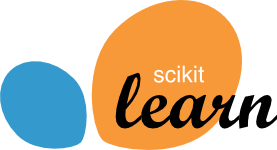
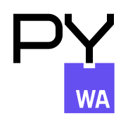
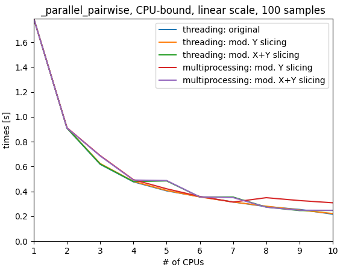

Main message
Join the free-thread union today!
CPython 3.13 free-threaded is already available, give it a go!
Development wheels from main Scientific Python packages available (numpy, scipy, pandas, scikit-learn, scikit-image, …)

@lesteve





CPython 3.13 free-threaded is already available, give it a go!
Development wheels from main Scientific Python packages available (numpy, scipy, pandas, scikit-learn, scikit-image, …)
import numpy as np
arr = np.arange(1_000_000)
def func(arg):
sum(arr)
%timeit [func(i) for i in range(20)]
# 848 ms ± 20.8 ms per loop (mean ± std. dev. of 7 runs, 1 loop each)tp = Pool(2)
%timeit tp.map(func, range(20))
# 463 ms ± 6.1 ms per loop (mean ± std. dev. of 7 runs, 1 loop each)Limitations:
3.13t (free-threaded, experimental) vs 3.13 (default)cp313-cp313tdoc: https://py-free-threading.github.io
repo: https://github.com/Quansight-Labs/free-threaded-compatibility
package manager on Linux, python.org download, …
numpy, scipy, pandas, scikit-learn, scikit-image …
Linux, MacOS probably, Windows not yet
pairwise_distances uses threading
Me: it would be great if you have time to try CPython free-threaded, it’s already available, see doc
User:
Good to know. I hope I will find some time to test it. I am really thrilled about it.

free-threading the needle
typically used as a metaphor, meaning to maneuver or find a way through a difficult situation
PEP 703 accepted in July 2023
Direct quotes from notice in October 2023:
Long-term (probably 5+ years), the no-GIL build should be the only build
Before we commit to switching entirely to the no-GIL build, we need to see community support for it
We want to be very careful with backward compatibility. We do not want another Python 3 situation
We want to be able to change our mind if it turns out, any time before we make no-GIL the default, that it’s just going to be too disruptive for too little gain
Before we commit to switching entirely to the no-GIL build, we need to see community support for it.
Great, let’s help on this!
If we want to help making it happen, interest is best shown by putting work into it
All the rest
not going to happen overnight, sure
running your package test suite is a start (maybe multiple times to have more chance to trigger issues)
more stress-testing is needed to find tricky threading-related issues
https://github.com/Quansight-Labs/free-threaded-compatibility/issues/56
pytest-repeat on test functions that use threadingThreadSanitizer on Numpy and see how helpful this isuse threading as default joblib backend
with gil => omp_set_lock in .pyx that uses OpenMPran a few other projects tests: joblib, distributed, and reported issues
scikit-learn CI: a few issues from time to time but nothing really bad
very helpful answers/fixes from Sam Gross
July 2023: PEP 703 accepted by the PSF Steering Committee
October 2023: more details PEP 703 acceptance by the SC
May 2024: CPython 3.13.0 beta 1 released
numpy and scipy uploaded nightly Python 3.13 free-threaded wheels to scientific-python-nightly-wheels
June 2024: scikit-learn free-threaded CI + development wheel uploaded to scientific-python-nightly-wheel
most fixes in Sam Gross forks had been upstreamed, but lingering one in Numpy detected in scikit-learn CI: RuntimeError: Identity cache already includes the item
https://github.com/numpy/numpy/issues/26690
scikit-learn tests with threading as joblib default backend, intermittent segmentation fault
[1] 1904131 segmentation fault (core dumped)Minimal reproducer without scikit-learn:
# Some numbers work better than other to trigger the segmentation fault
from threadpoolctl import threadpool_limits
threadpool_limits(10, user_api="blas")
rng = np.random.default_rng(0)
L = rng.normal(size=(50, 50))
W_sr = rng.normal(size=50)
def func(i):
cho_solve((L, True), np.diag(W_sr))
def create_multiprocessing_pool():
# only triggers segmentation fault with multiprocessing 'fork' start_method
Pool(2)
if __name__ == '__main__':
create_multiprocessing_pool()
tpe = ThreadPoolExecutor(max_workers=2)
tpe.map(func, range(10))CPython 3.13 free-threaded is already available, give it a go!
Development wheels from main Scientific Python packages available (numpy, scipy, pandas, scikit-learn, scikit-image, …).
How to help: setup CI for your package, try it on your use case and give feed-back